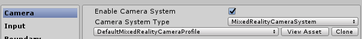
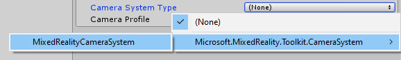
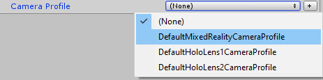
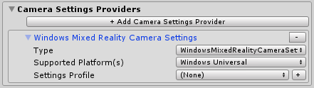
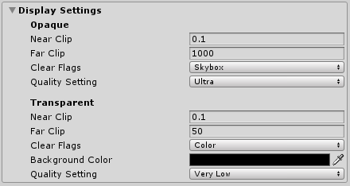

相机系统
相机系统使Microsoft Mixed Reality Toolkit能够配置和优化该应用程序的相机，以用于混合现实应用程序。使用相机系统，可以编写应用程序以支持不透明（例如虚拟现实）和透明（例如Microsoft HoloLens）设备，而无需编写代码来区分和适应每种类型的显示。
启用相机系统
相机系统由MixedRealityToolkit对象（或另一个服务注册者组件）管理。
以下步骤假定使用MixedRealityToolkit对象。其他服务注册者所需的步骤可能有所不同。
在场景层次中选择MixedRealityToolkit对象。

将“Inspector”面板导航到“camera system”部分，并确保已选中Enable Camera System。

选择相机系统实现。MRTK提供的默认类实现是
MixedRealityCameraSystem。
选择所需的配置文件

配置相机系统
Settings providers (设置提供者 )

相机设置提供者支持相机的平台特定配置。这些设置可能包括自定义配置步骤和/或组件。
可以通过单击Add Camera Settings Provider按钮来添加提供者。可以通过单击提供者名称右侧的-按钮将其删除。
[!注意] 并非所有平台都需要相机设置提供者。如果没有与运行该应用程序的平台兼容的提供者，则Microsoft Mixed Reality Toolkit将应用基本默认值。
Display settings (显示设置 )

为不透明（例如：虚拟现实）和透明（例如：Microsoft HoloLens）显示指定了显示设置。使用这些设置在运行时配置相机。
Near Clip
near clip plane是相机可以渲染的最接近的虚拟对象的距离（以米为单位）。为了最大程度地提高用户的舒适度，建议将该值设置为大于零。上一张图片包含的值在各种设备上都很合适。
Far Clip
far clip plane是相机可以渲染的最远的虚拟对象的距离（以米为单位）。对于透明设备，建议这个值相对近，以免过度超出真实世界的空间，破坏应用程序的沉浸性
Clear Flags (清除标志)
清除标志值指示绘制时如何清除显示。对于虚拟现实体验，此值通常设置为Skybox。对于透明显示器，建议将其设置为“Color”。
Background Color (背景颜色)
如果清除标志未设置为“ Skybox”，则将显示背景颜色属性。
Quality Settings (质量设置 )
质量设置值指示Unity渲染场景时应使用的图形质量。质量级别是项目级别的设置，并不特定于任何一台相机。有关更多信息，请参见Unity文档中的质量文章。